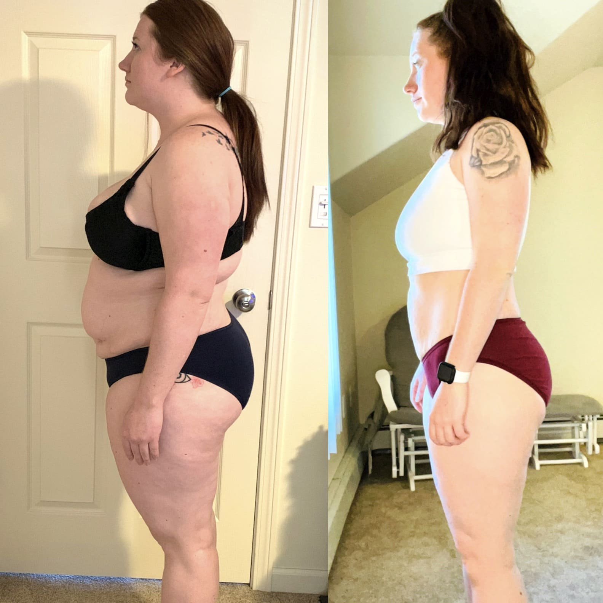
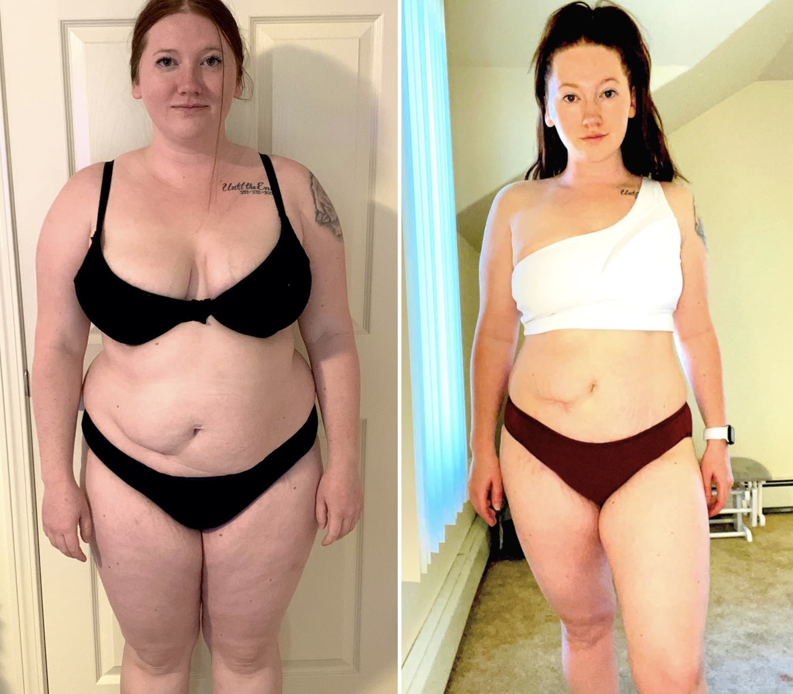
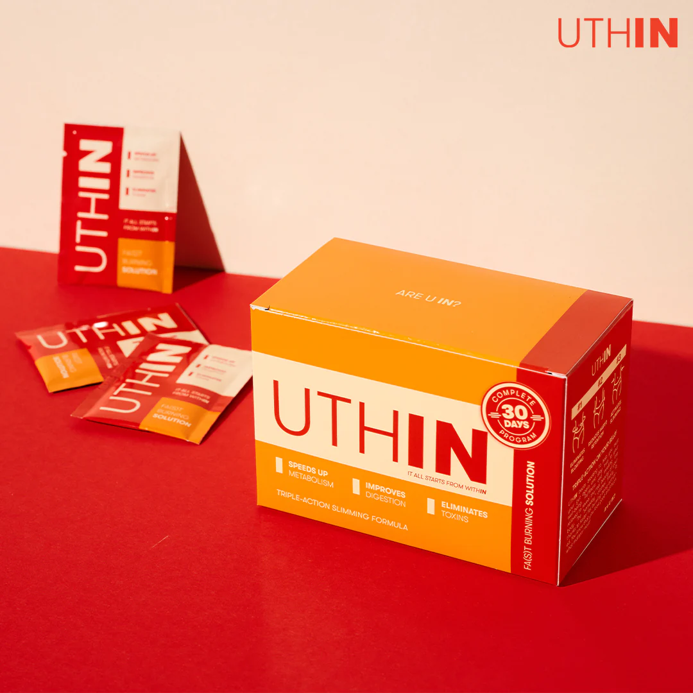

My story My incredible 15kg postpartum weight loss transformation!
November 3, 2023 | Written by Stella Hendriks
I knew I looked terrible, but I just couldn't resist the craving for food.
After giving birth at the age of
24, my body recovered on its own. My pre-pregnancy weight returned without any problems. The same thing
happened after my second pregnancy, two years later. But the same miracle did not happen after my third
pregnancy at the age of 32.
I ate irresponsibly, as usual, hoping that the pounds would go away on their own,
like the two times before. This didn't do me any good. My youngest son was 6 months old, and my excess
weight continued to increase (people even thought I was pregnant with my fourth child). My son was always
restless, he hardly gave me a break and had to be held in my arms all the time. I was constantly busy with
the children, my husband, the house, and stressed. This made me constantly eat sweets, breaded and salty
foods. I was a pig. Even the slightest movement made me sweat and my heart beat like crazy.
.jpg)
I weighed 95kg when I caught my husband looking at girls passing by. I couldn't even blame him at that moment - what can I expect from a man when I hate myself. I avoided looking at myself when I went to the mirror, let alone undressing in front of him... I hid in the children's room and fell asleep in the bed of our youngest child with candy.
The only thing that motivated me to see a specialist was that my child could barely walk at 14 months... a
mother's nightmare. Trying to teach my son how to walk was torture. The lower part of my back cracked
and I
felt like there was red-hot metal in it. Sweat dripped down my face and onto the child.I couldn't go on like
that, so I asked my husband to take some time off and look after the kids while I went to see a
nutritionist. There's not much to say about my first attempt at seeing a nutritionist - they put me on a
protein diet that I only stuck to for 3 days. I was so exhausted and hungry that I was annoyed by every
little thing.
Even my nerves towards the child were lost. My husband could not stand it anymore and bought me
a cake. This brought me short-term relief, but the main problem remained.
I went to a nutritionist who asked me to try the keto diet. The basic idea of the keto diet is that the
body supposedly burns fat all the time while you only eat foods high in fat and protein with hardly any
carbs. It just so happens that I like to eat that, so it wasn't too hard. Everything was going well until
day five when what the nutritionist called the "keto flu" stopped me in my tracks. Symptoms included
fatigue, nausea, a cloudy mind, and headaches that even the strongest painkillers couldn't relieve. And that
was hard enough with 3 kids.
My nutritionist recommended the Uthin supplement to help me with my
diet. A
drink that speeds up metabolism that I fell in love with. A cup of Uthin gave me so much energy.
Uthin was my salvation- How It Changed My Life Forever
A month later, I had lost 6 kg. I really hadn't done anything to deserve it. Really. I just took Uthin and ate as usual. Sometimes I even ate sweets and unhealthy food (although very rarely). But the size of the portion I needed became smaller. I felt so light and free and even better than after the birth of my first child, without being hungry all the time. Housework and taking care of the children became easier. It was like I had started a new life.I started moving more and teaching my son to walk. I'm happy. I no longer get strange looks from other mothers at the playground.The whole weight loss process took only 3 months. The nutritionist said that this is how Uthin works. I had to wait 5-6 months to get the same results without this supplement. My only regret is that I found out about this drink so late and struggled with my weight without it.
I am very happy with my new wardrobe. Swapping out the maxi size for new, sexy clothes has made me really happy.
I am very happy with my new wardrobe. Swapping out the maxi size for new, sexy clothes has made me really happy.
LIMITED TIME SPECIAL OFFER
For a limited time, there is an exclusive 50% DISCOUNT to all new customers. This incredible discount is only available for a short period, so don't miss out and place your order now to take full advantage of this offer.
100% Natural
Free Delivery